My Photo Album and Some Music to Share
Here I want to share some photos taken while travelling around the world. Some photos may not be displayed at the highest resolution since I can not find the orginal pictures at this time:(
Here I want to share some photos taken while travelling around the world. Some photos may not be displayed at the highest resolution since I can not find the orginal pictures at this time:(
The City of Chicago never fails to display her beauty on architecture and landscape at any time.
>This is a spectacular air show held in Chicago every year. I hope that it will return this year after the pandemic.
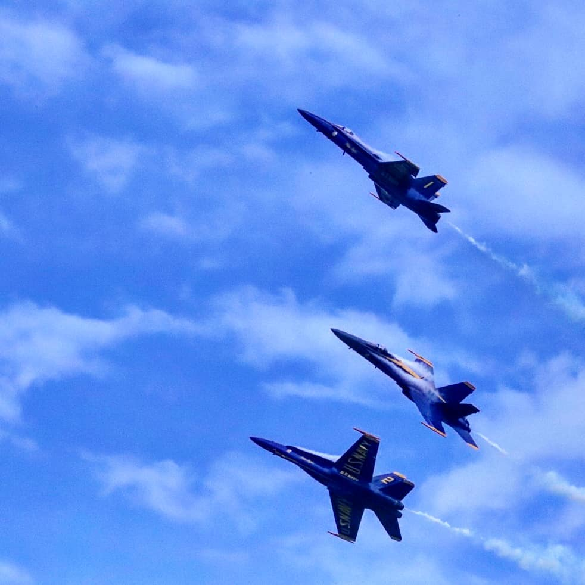 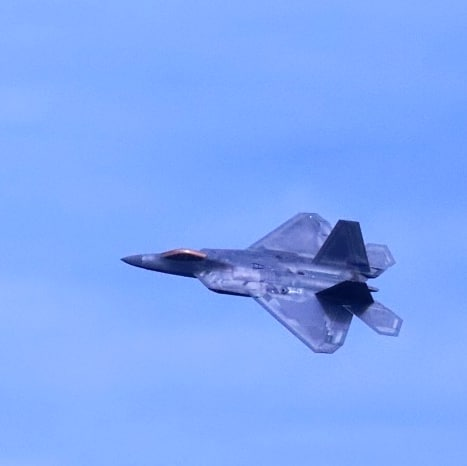I am always interested in trying out different kinds of foods and exploring new restaurants.
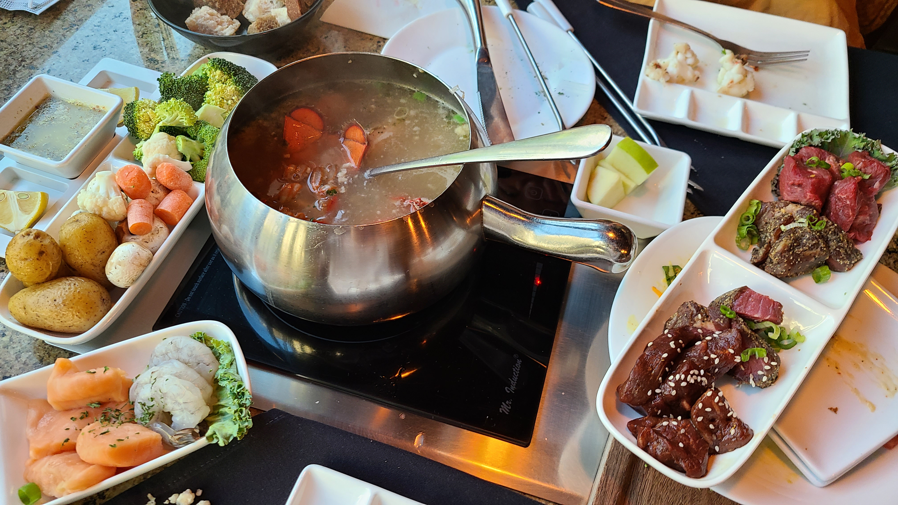 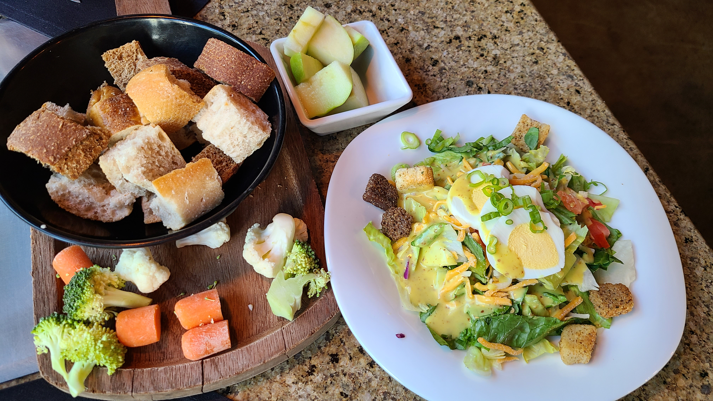 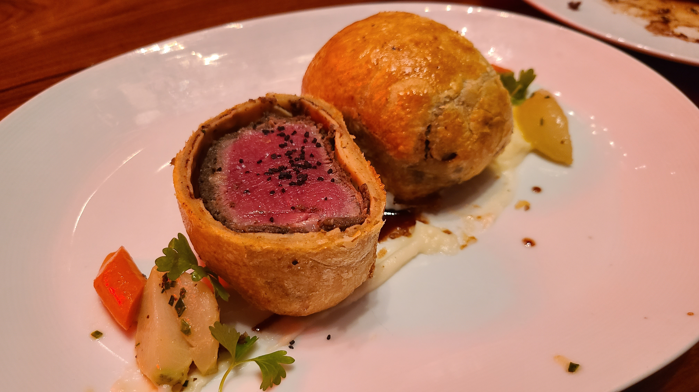 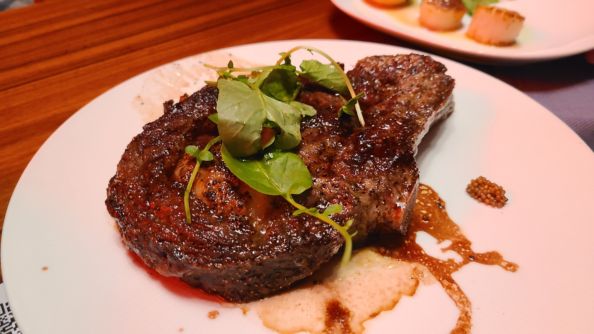 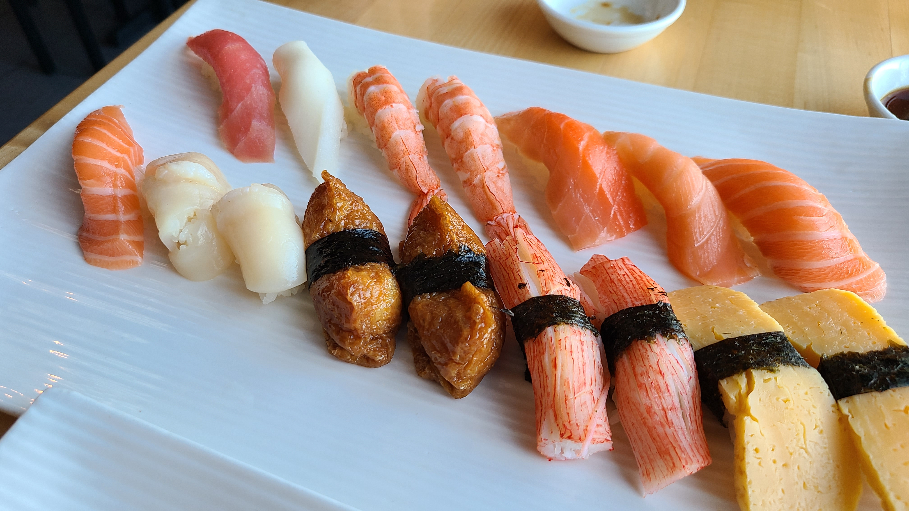 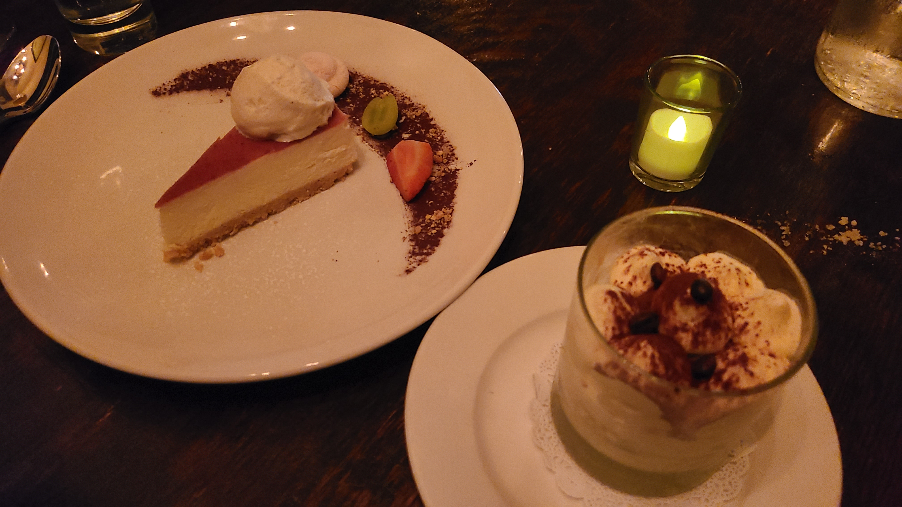I am not a chef but will sometimes cook for myself and my friends.
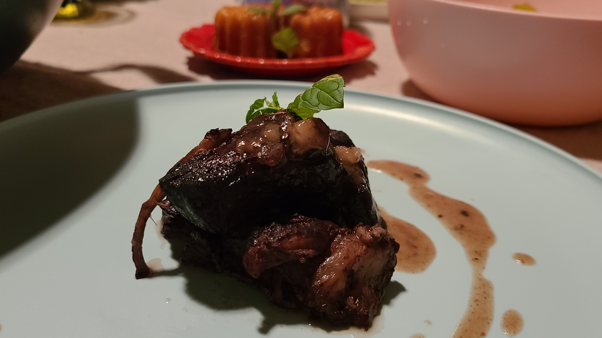 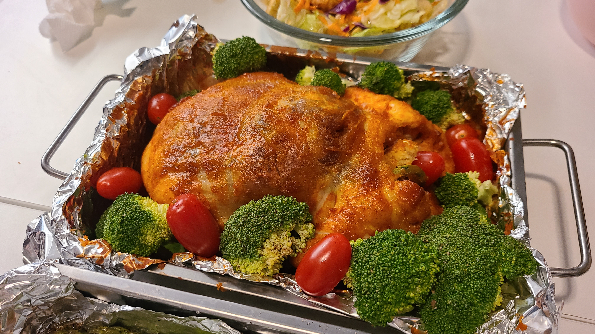
 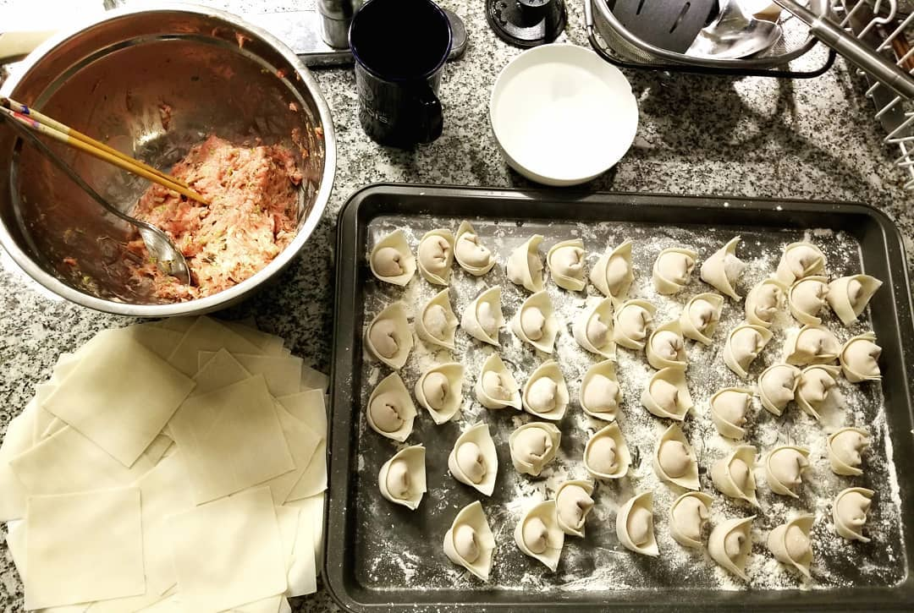
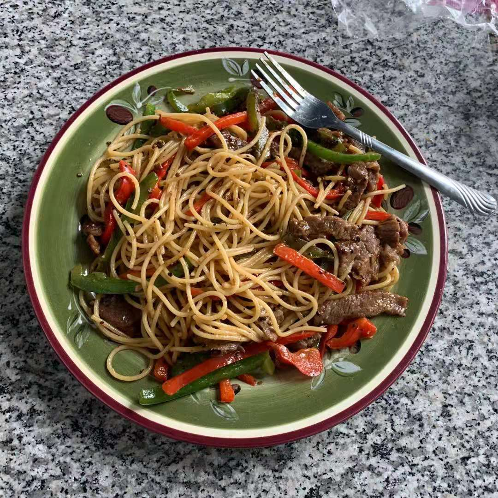
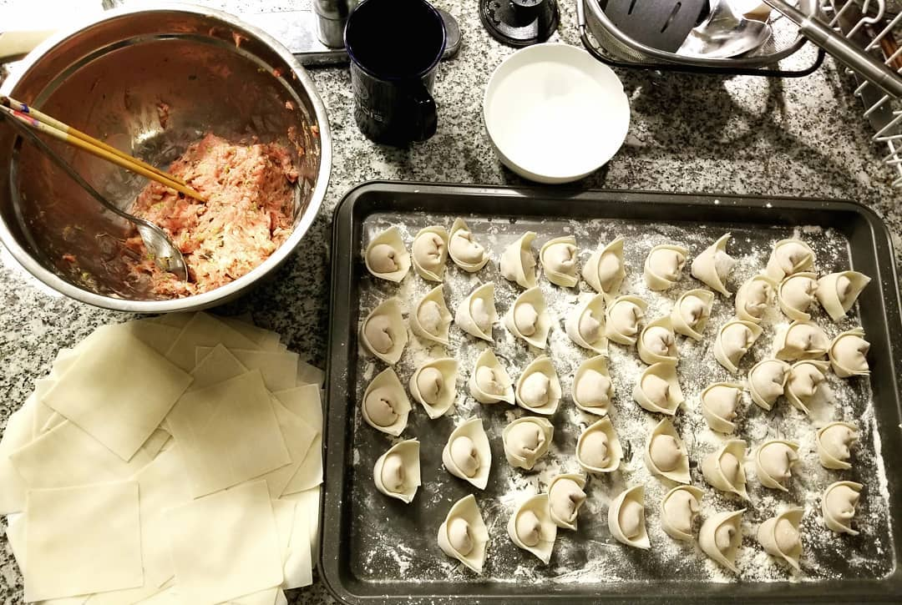
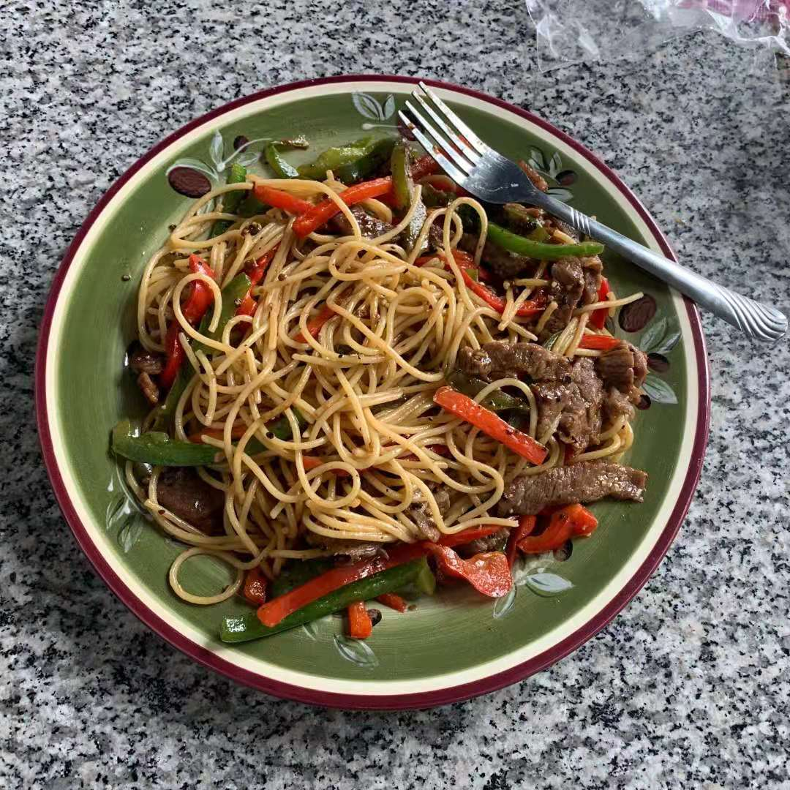
I love listening to the music of all genres, and below is a classical piece from one of my favorite composers Shostakovich. This piano version is arrenged and played by Florian Noack.
The video game Hollow Knight also comes up with some fascinating music. This video is made by Mart0zz.